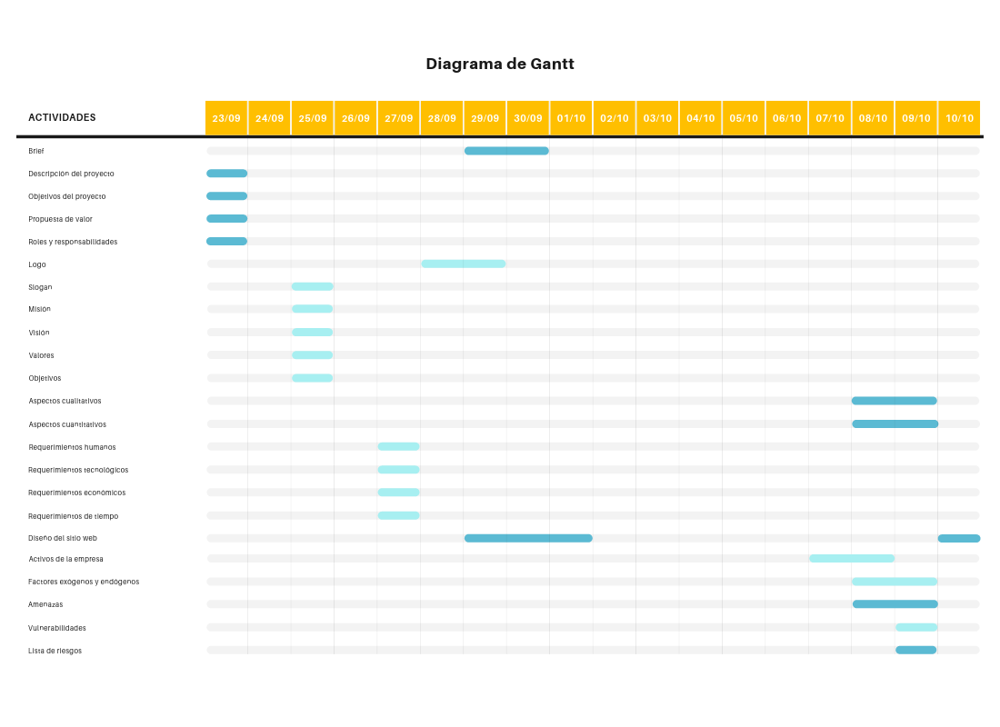

Nuestros proyectos
Actuales
Página web de apoyo para la enseñanza del inglés.
Brief:
In this project, we developed a software that can be used as a helpful tool for the teaching of the grammatical structure "get", aimed at children between 8 and 12 years. We offer a large range of features, including, a platform in which a new user can create their own account and keep track of their progress along the different exercises we offer. Our software includes links to online videos, articles, and exercises that, we hope, will come in handy in the users' learning process.
We all are looking forward to a better tomorrow and that's why, in the development of this project, our primary concern is to contribute to the introduction of new technological tools to the conventional teaching standard that may turn helpful in the academical growth of the new generations.
We all are looking forward to a better tomorrow and that's why, in the development of this project, our primary concern is to contribute to the introduction of new technological tools to the conventional teaching standard that may turn helpful in the academical growth of the new generations.
Descripción del proyecto:
Este proyecto consiste en el desarrollo de un software para una profesora de inglés (el cliente), para utilizarse como herramienta de apoyo en la enseñanza de la estructura gramatical "get", a niños en un rango de edad entre 8 y 12 años (los usuarios finales).
Para esto, nuestro software contará con elementos como enlaces a vídeos en Youtube, artículos con ejemplos sobre el uso de la estructura gramatical, juegos sencillos y características de obtención de puntos para motivar a los usuarios a continuar avanzando con los diferentes ejercicios.
Cada usuario podrá registrarse en nuestra plataforma, creando un usuario y una contraseña, y de esto modo, podrá mantener un registro de su avance así como el puntaje obtenido en los diferentes niveles y ejercicios.
Para esto, nuestro software contará con elementos como enlaces a vídeos en Youtube, artículos con ejemplos sobre el uso de la estructura gramatical, juegos sencillos y características de obtención de puntos para motivar a los usuarios a continuar avanzando con los diferentes ejercicios.
Cada usuario podrá registrarse en nuestra plataforma, creando un usuario y una contraseña, y de esto modo, podrá mantener un registro de su avance así como el puntaje obtenido en los diferentes niveles y ejercicios.
Propuesta de valor:
{kind=link}
Roles y responsabilidades en el equipo de desarrollo de software:
Existirán diferentes roles dentro de nuestro entorno de trabajo y cada participante tendrá responsabilidades particulares
- Amaya Lopez Dulce Fernanda: Es la líder de equipo que se encarga de organizar y asignar las diversas tareas que existen en el desarrollo de esta aplicación.
- Lechuga Martínez José Eduardo: Es el responsable principal de la interfaz de usuario, aparte de ser uno de los principales programadores de la aplicación web.
- Navarrete Puebla Alexis: Responsable de la base de datos que tendrá la aplicación, también en sus responsabilidades está la parte del HTML.
- Rosado Cabrera Diego: Es uno de los responsablez de calidad del producto, será el tester del grupo, además trabajará en la documentación y apoyo en la programación.
- Sainz Takata Izumi María: Es una de las responsables de la calidad del producto y ser la principal programadora JS que el equipo posee.
Requerimientos:
-
Humanos
Contamos con 5 programadores asesorados por 1 maestro y 2 ayudantes. -
Tecnológicos
- Hardware: Contamos con 5 equipos que tienen instalados sistemas operativos base unix y 4 de ellos cuentan con Windows.
- Software: Se utilizarán principalmente tecnologías web. Debido a éstopara el backend se usará Javascript como lenguaje de programación principal. Mientras que para el frontend se utilizarán principalmente HTML y CSS.
-
Económicos
- Transporte: nos tendremos que transportar a un punto de reunión donde se discutirán las diferentes ideas que surjan en el proyecto.
- Comida: requerimos también consumir alimentos y bebidas a lo largo de las diferentes etapas de elaboración del proyecto.
- Transporte: nos tendremos que transportar a un punto de reunión donde se discutirán las diferentes ideas que surjan en el proyecto.
- Comida: requerimos también consumir alimentos y bebidas a lo largo de las diferentes etapas de elaboración del proyecto.
- Higiene Personal: también requerimos gastos en este rubro, a lo largo de las diferentes etapas de elaboración del proyecto.
- Energía eléctrica: requerimos de energía eléctrica para el uso de nuestro diferentes equipos electrónicos como lo son las computadoras, celulares, tablets, etc. Esto con el objetivo de comunicarnos y poder utilizar el software que requerimos.
- Conexión Wi-fi y conexión de Datos: necesitamos conexión a internet para hacer búsquedas y descargas de los diferentes softwares, al igual que para comunicarnos. Renta: requerimos de un lugar donde podamos trabajar individualmente y reunirnos para trabajar los distintos puntos del proyecto.
- Licencias de Software: existen algunos programas de pagaque podríamos llegar a necesitar, como es el caso de PhotoShop o los diferentes programas para crear diagramas digitales.
Tiempo
Para poder realizar este proyecto necesitamos de algunas semanas para poder dar un prototipo aceptable. Esto se debe a que antes de empezar la parte de implementación, se deberán valorar los diferentes riesgos que estarán presentes en la realización del proyecto, sin mencionar la fase de levantamiento de requerimientos necesaria para entregar el producto final al cliente.
Diagrama de Gantt
{kind=link}
Anteriores
Proyecto 1
Proyecto 2
Proyecto 3